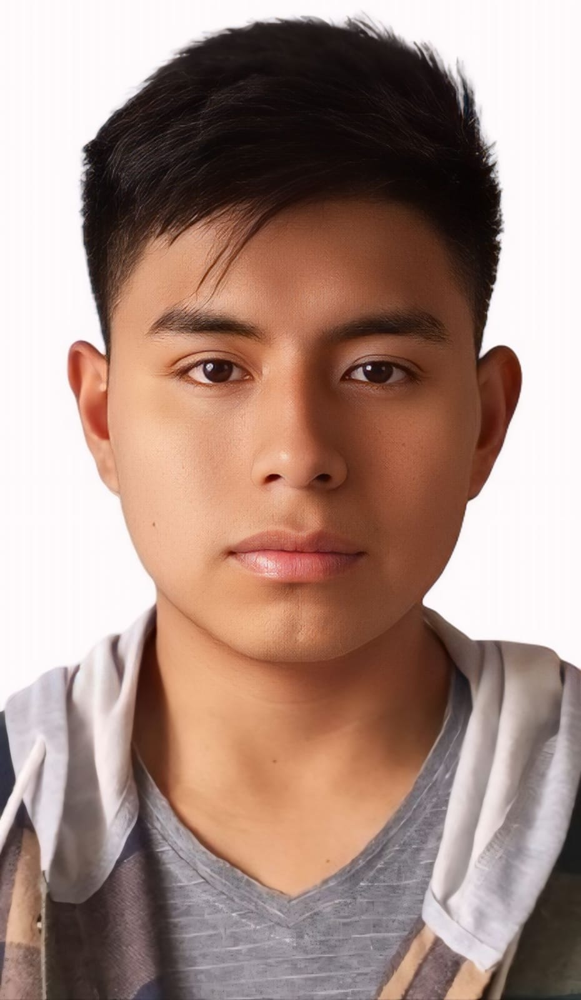

Hola, Soy William Cunachi
Backend Junior Developer
Soy estudiante de Ingeniería de Software (6.º semestre). Me estoy formando como desarrollador backend, con experiencia en C# y conocimientos en Java, HTML y CSS. Me gusta trabajar en proyectos que me reten y me enseñen. Este portafolio es una muestra de lo que voy aprendiendo y construyendo en mi camino como futuro ingeniero de software.


